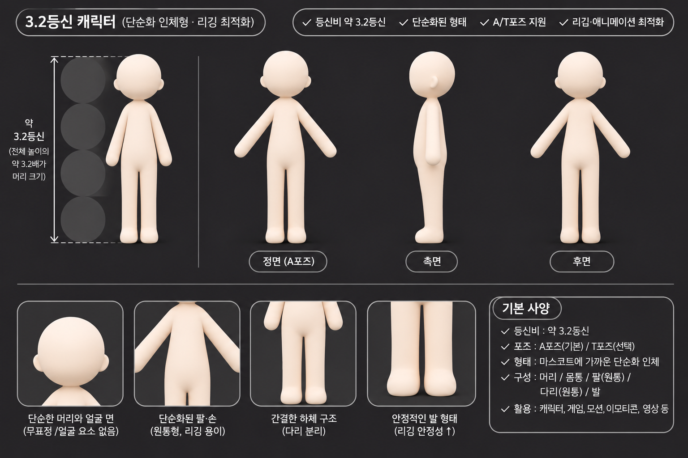

PROJECT PROGRESS / 02
설계
이야기와 화면의 규칙을 정합니다.
설계 방향 정리2026.11.16 업데이트 · 인물·SNS 기준 확정과 구현·검증 상태를 구분합니다.
세부 작업을 눌러 내용을 펼쳐보세요. 가장 최근 업데이트된 작업 하나만 먼저 펼쳐져 있습니다. 다른 작업도 눌러 열 수 있습니다. 완료 표시는 해당 작업에만 적용됩니다.
01캐릭터를 위한 형태 연구● 진행 중
내용 업데이트 · (한국시간) · 변경 기록
01 / VISUAL STUDY
등신비, 머리와 몸의 형태, 근육의 덩어리와 관절을 나누어 살펴봅니다. 얼굴·의상 같은 표면 요소를 덜어내고 구조에 집중하는 방향입니다.
확인한 범위: 생성 이미지가 존재합니다. 실제 3D 메시, 리깅 성공이나 학습 성능을 입증하는 자료는 아닙니다.
이 방향이 나오기까지 ↗
02작품 속 시간을 움직이며 아바타의 기록을 읽습니다.● 진행 중
내용 업데이트 · (한국시간) · 변경 기록
03 / EXPERIENCE CONCEPT
작품 속 시간은 2120~2126년입니다. 자매의 SNS 피드를 통해 시점별 게시물과 스토리를 읽는 방식을 구상하고 있습니다.
배경, 인물, 효과음, 말풍선을 나누어 구성합니다. 대사는 텍스트로, 공식 번역은 언어별 자료로 관리하는 방향입니다.
이 아카이브에는 실제 SNS 로그인·댓글·시간축 체험 기능을 제공하지 않습니다. 아래 구조는 작품 화면의 설계 설명입니다.
03제작 규칙으로 구체화할 항목● 기준 정리 · 구현 중
내용 업데이트 · (한국시간) · 변경 기록
2026.11.16 / 확정과 미결 분리
작가가 확정한 기준
- SNS 운영 주체는 인간 자매. 아바타는 별도 인격이 아닌 사회적 페르소나.
- 1 epoch = 작품 속 1일. 동생은 제작 경과, 언니는 기획한 디자인과 유용한 정보를 게시.
- 이번 범위는 아바타 제작 과정과 SNS 운영. 큰 사건과 결말은 다음 프로젝트.
- Luxy 표기로 통일. AI 관찰 기록과 작가의 인물·감정 해석을 분리.
구현을 위해 더 정할 항목
- 시작 날짜, epoch 재시도·중단·재개와 날짜 중복 처리.
- 스토리 24시간의 경계, 미래 게시물 차단, 선택 시점과 실제 댓글 작성 시각의 관계.
- 가상 페르소나 댓글과 실제 독자 댓글의 표시·저장·정렬·관리 규칙.
- 외부 자료의 현재 유효성·출처·권리 확인. 현재 서비스를 2126년에도 실제 존재하는 서비스로 보증하지 않기.
- 실데이터 없는 샘플은 ‘시연 데이터’로 표시하고 실제 학습 성과·계정 활동과 구분.
유지하는 컷·다국어 설계
작품 컷과 말풍선별 ID, 언어별 대사와 폰트 정보를 JSON으로 관리하는 방향입니다. 공식 번역은 언어 버튼으로 제공하고, 브라우저 번역을 사용할 수 있도록 대사는 이미지에 합치지 않는 구상입니다.
실제 데이터 규격과 화면 동작은 구현·검증이 필요한 항목입니다.
규칙을 정하게 된 과정 보기 →